D: Elipsa je množina všech bodů v rovině, které mají od daných 2 různých bodů (ohnisek) konstantní součet vzdáleností
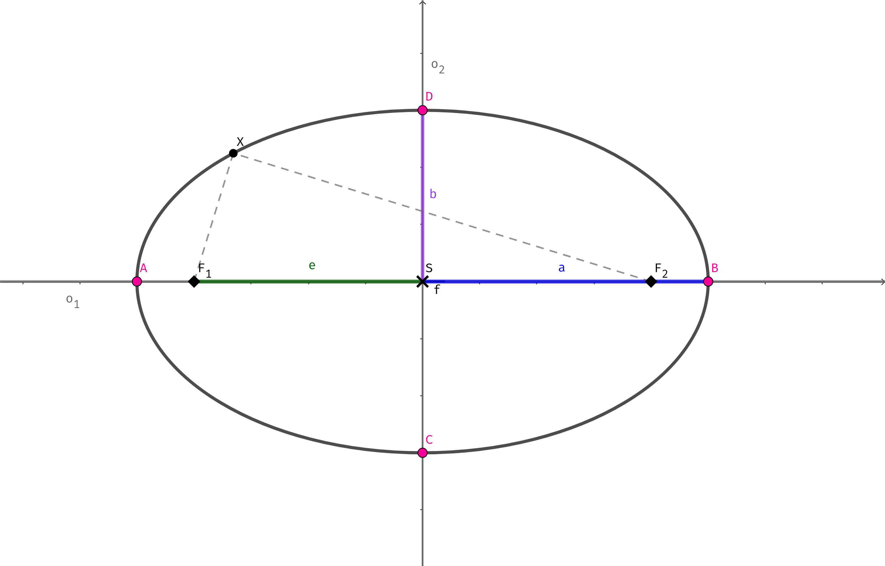
Vime, že vzdálenost bodu libovolného bodu \(X\) od ohnisek musí být konstantní:
\[ |F_1X|+|F_2X|=konst \]
Odvodíme také, že vzdálenost hlavních vrcholů je dvojnásobek délky hlavní poloosy:
\[ |AB|=2a \]
Jelikož víme, že součet vzdáleností \(X\) od ohnisek je konstantní, tak musí být konstantní i v hlavních vrcholech. Tudíž součet vzdáleností musí být roven velikosti úsečky \(|AB|\).
Určíme, že bod ležící na elipse má souřadnice $X[x,y].
Podle toho jestli je v analytickém zápisu \(a\) pod souřadnicí \(x\) nebo \(y\) určíme s jakou souřadnicovou osou bude hlavní osa splývat.
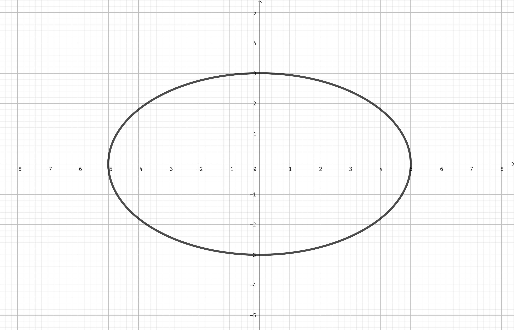
Souřadnice ohnisek jsou \(F_1[-e,0]\) a \(F_2[e,0]\).
Analytický zápis:
\[ \frac{x^2}{a^2}+\frac{y^2}{b^2}=1 \]
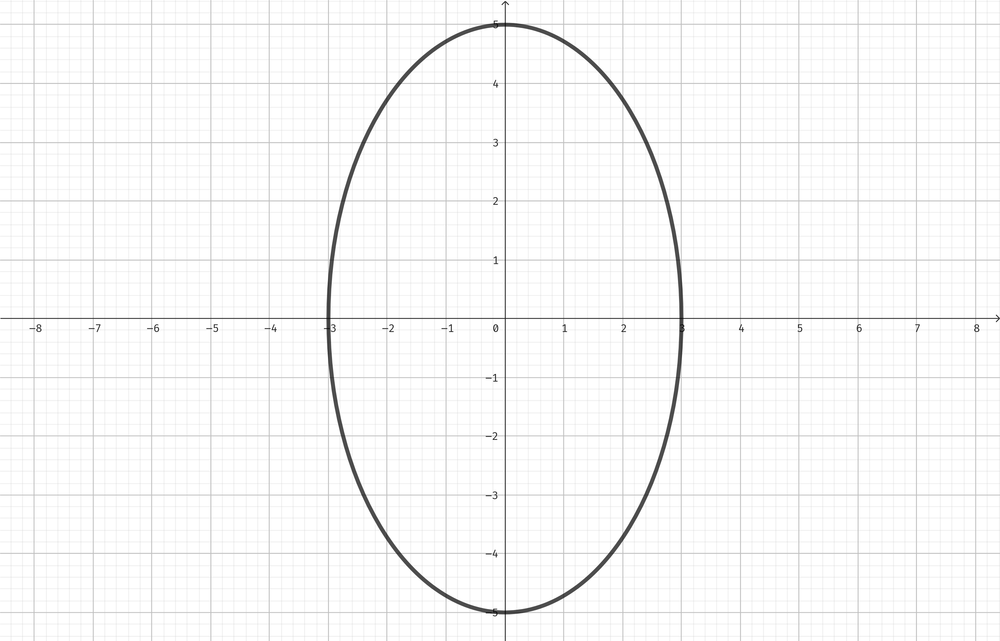
Souřadnice ohnisek jsou \(F_1[0,e]\) a \(F_2[0,-e]\)
Analytický zápis:
\[ \frac{x^2}{b^2}+\frac{y^2}{a^2}=1 \]
Střed elipsy má souřadnice \(S[m,n]\).
Podle toho jestli je v analytickém zápisu \(a\) pod souřadnicí \(x\) nebo \(y\) určíme s jakou souřadnicovou osou bude hlavní osa splývat.
Toto analytické vyjádření se nazývá středová rovnice elipsy.
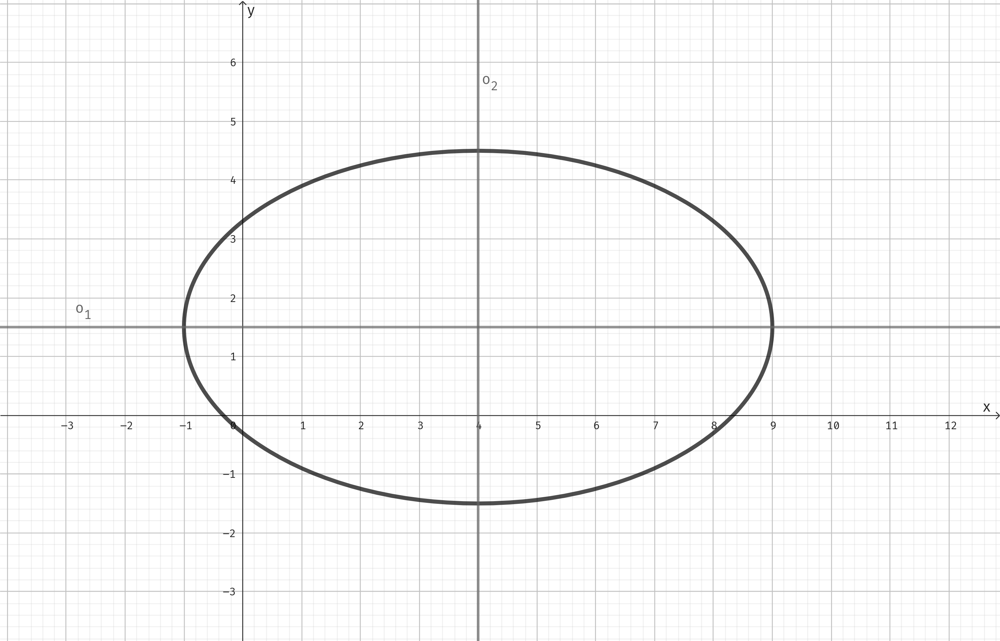
Souřadnice ohnisek jsou \(F_1[-e,0]\) a \(F_2[e,0]\).
Analytický zápis:
\[ \frac{(x-m)^2}{a^2}+\frac{(y-n)^2}{b^2}=1 \]
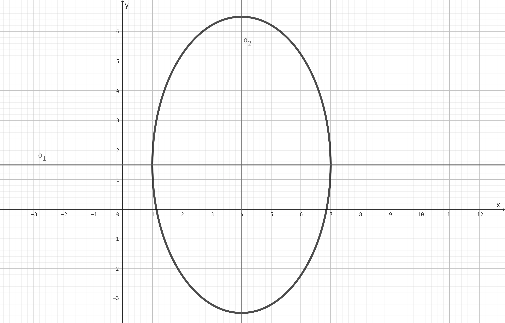
Souřadnice ohnisek jsou \(F_1[-e,0]\) a \(F_2[e,0]\).
Analytický zápis:
\[ \frac{(x-m)^2}{b^2}+\frac{(y-n)^2}{a^2}=1 \]
Pro elipsu se středovou rovnicí:
\[ \frac{(x-1)^2}{9}+\frac{(y-2)^2}{4}=1 \]
Existuje obecná rovnice ve tvaru:
\[ 4x^2+9y^2-8x-36y+4=0 \]
POZOR! Ne každá obecně vypadající rovnice je rovnicí elipsy.
Máme rovnici:
\[ \frac{(x-2)^2}{9}+\frac{(y-2)^2}{4}=1 \]
Na obecnou rovnici ji převedeme tak, že rovnici vynásobíme jmenovateli a upravíme rovnici.
Máme rovnici:
\[ 9x^2+25y^2-54x-50y-119=0 \]
Abychom ji převedli na středovou rovnici musíme ji převést na středové dvojčleny:
D: Parabola je mnoýona všech bodů v rovině, které mají stejnou vzdálenost od daného bodu \(F\) a od dané přímky \(d\) , která tímto bodem neprochází.
\[ \left| |XF| = |Xd| \right| \]
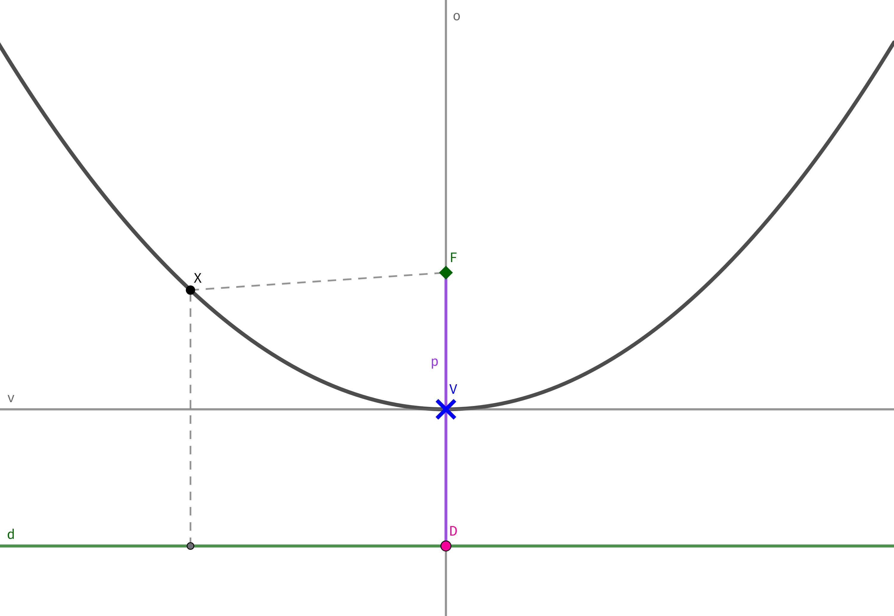
Z definice paraboly lze odvodit rovnice paraboly.
\[ x^2=2py \]
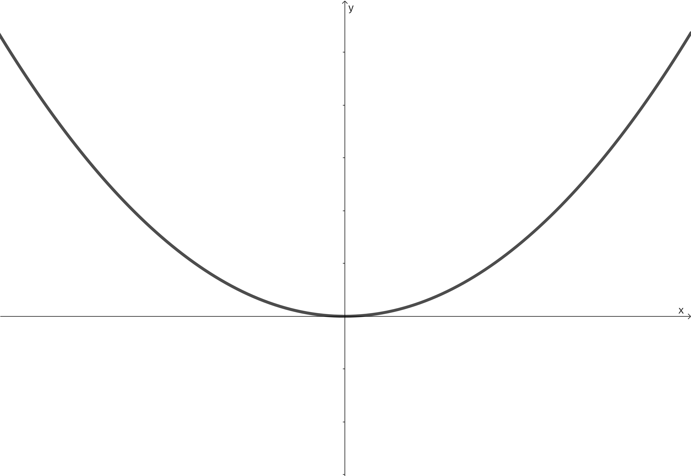
\[ x^2=-2py \]
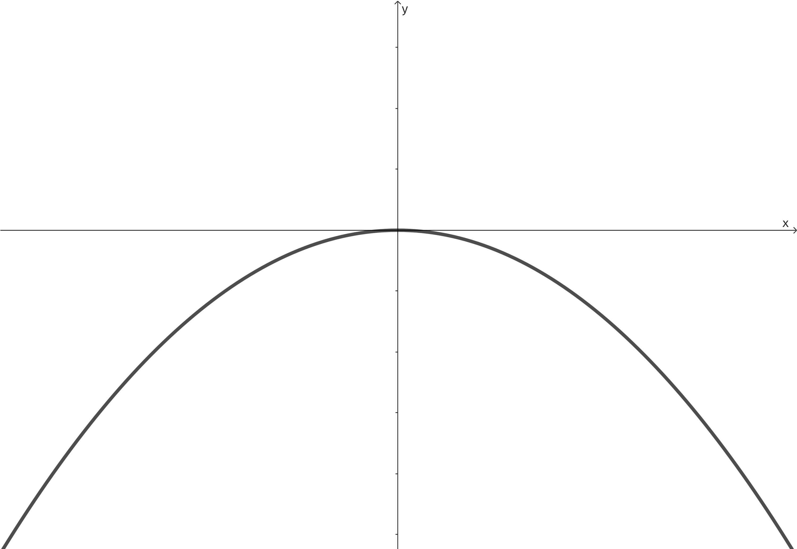
\[ y^2=2px \]
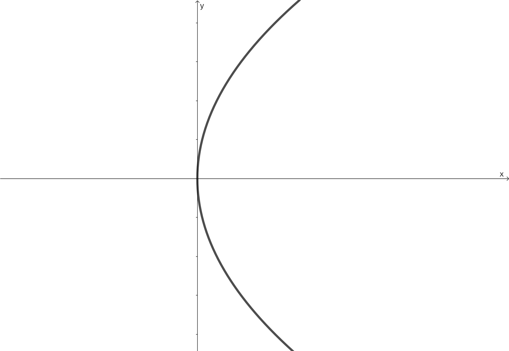
\[ y^2=-2px \]
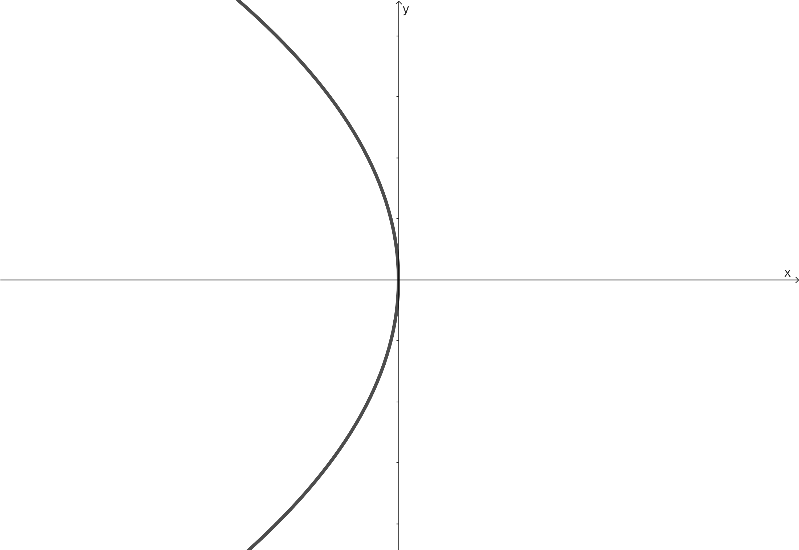
Souřadnice vrcholu označíme: \(V[m,n]\).
\[ (y-n)^2=2p(x-m) \]
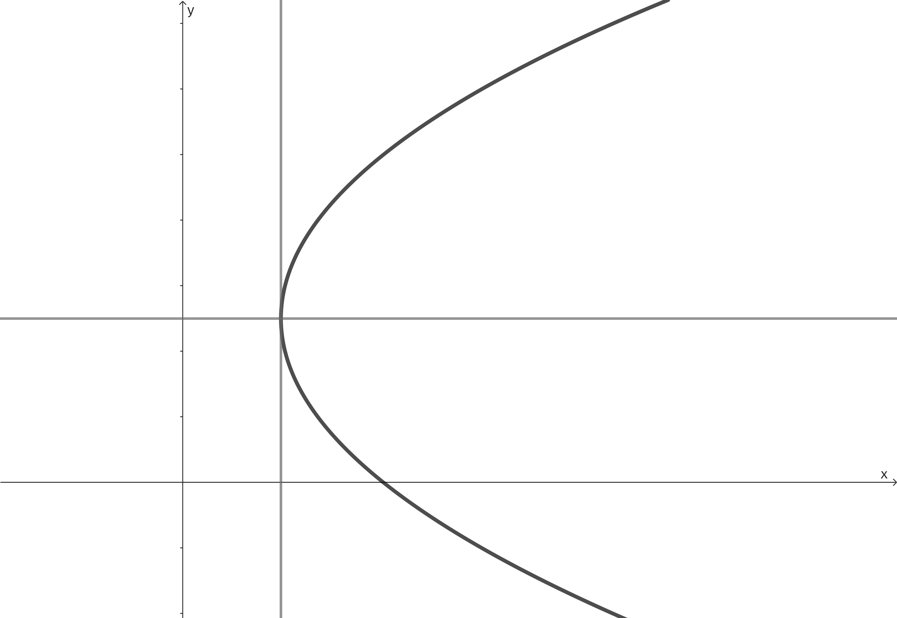
\[ (y-n)^2=-2p(x-m) \]
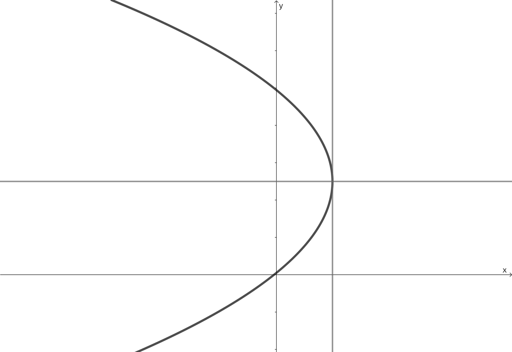
\[ (x-m)^2=2p(y-n) \]
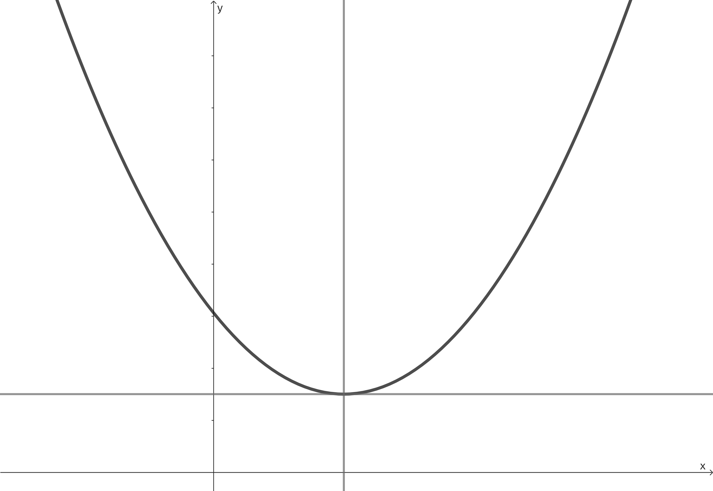
\[ (x-m)^2=-2p(y-n) \]
-\(F\) je pod vrcholem
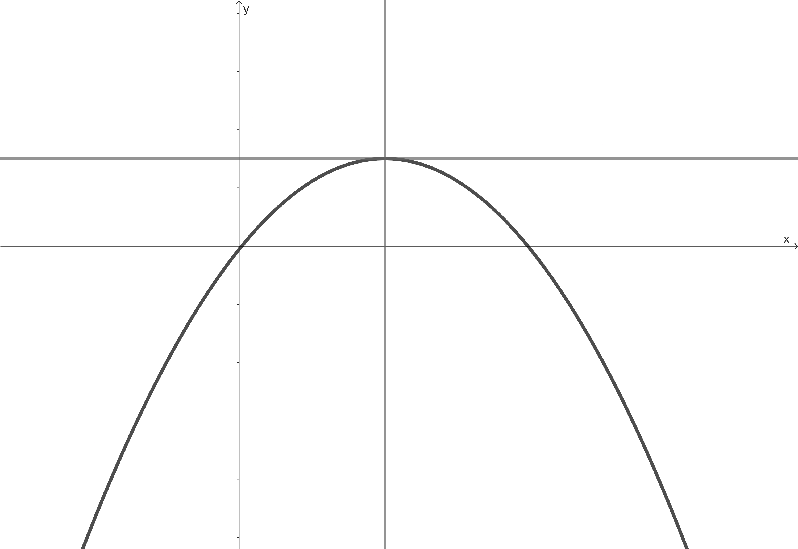
Jestliže umocníme a roznásobíme závorky ve vrcholové rovnici a rovnici anulujeme, dostaneme obecnou rovnici paraboly.
Osa paraboly je rovnoběžná s osou \(x\)
Osa paraboly je rovnoběžná s osou \(y\)
Hyperbola je rovinná křivka, kuželosečka.
D: Hyperbola je množina všech bodů \(X\) v rovině, které mají od dvou daných různých bodů (ohnisek \(F_1\) a \(F_2\)) konstantní (neměnnou) absolutní hodnota rozdílu vzdáleností.
\[ \left| |F_1X| - |F_2X| \right| = 2a \]
OBRAZEK KUZELOSECKY
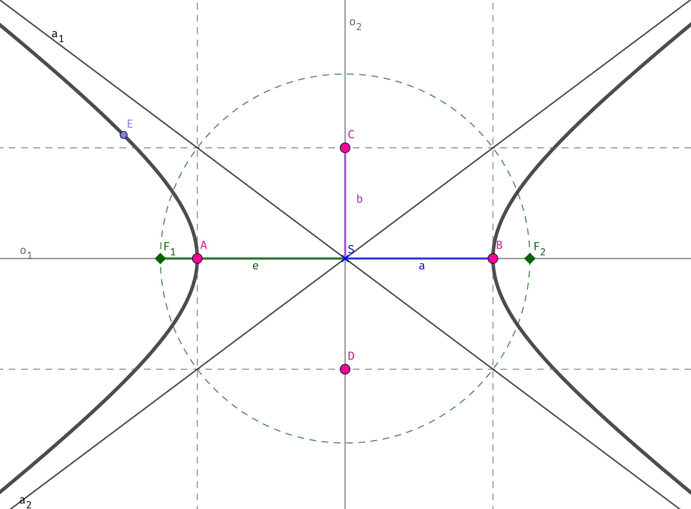
Platí: